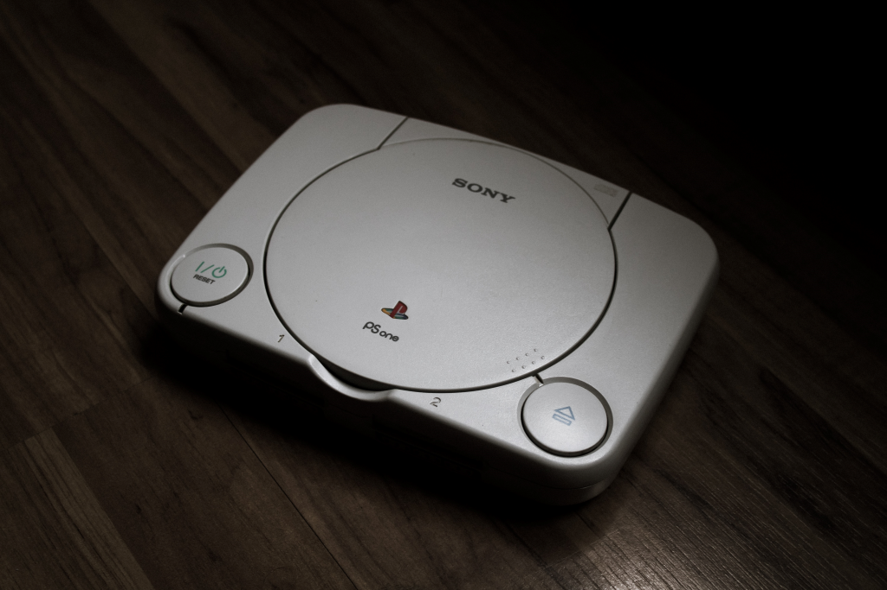
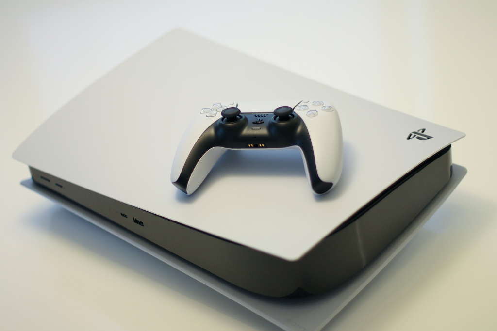

Playstation
Ditulis oleh Rackaaf. pada 9 November 2022.
Pengertian dan Sejarah
PlayStation atau PS didirikan oleh Sony Interactive Entertainment pada tanggal 3 Desember 1994. PS adalah konsol video game yang dibuat di Jepang. Namun, target pasarnya bukan hanya Jepang melainkan berbagai negara di belahan dunia. Awalnya PS hanya berupa konsol video game rumahan. Berbagai perkembangan dan inovasi lantas membuat jenis PS semakin berkembang. Tidak hanya sebagai konsol video game rumahan, PS berkembang menjadi konsol video game genggam atau mobile. PS juga berkembang menjadi pusat media, layanan online, pengontrol permainan, bahkan smartphone. Hingga saat ini pun PS masih terus melakukan berbagai inovasi agar tetap sesuai dengan era digital dan kebutuhan serta keinginan masyarakat luas.
PlayStation 5
PlayStation 5 (disingkat PS5) merupakan konsol permainan yang dikembangkan oleh Sony Interactive Entertainment. Diumumkan sebagai penerus PlayStation 4 pada tahun 2019, dirilis pada 12 November 2020, di Australia, Jepang, Selandia Baru, Amerika Utara, Singapura, dan Korea Selatan dan diikuti dengan perilisan di seluruh dunia seminggu kemudian. Konsol ini akan menggunakan solid state drive (SSD) khusus, GPU dengan dukungan ray tracing, serta kompatibilitas mundur dengan permainan PlayStation 4 dan PlayStation VR. Konsol ini akan bersaing dengan Xbox Series X dan Nintendo Switch.
Sumber : teknoforestteract , wikipedia